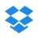
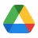

L'évolution du cloud computing
Définition
Le cloud computing, ou « informatique dans les nuages », désigne l'utilisation de serveurs distants pour stocker, traiter et partager des données, des applications ou des services. Au lieu de disposer d'une infrastructure informatique interne (serveurs, stockage, maintenance), les utilisateurs et les entreprises accèdent à ces ressources via Internet, le plus souvent à travers un navigateur web.
Ce modèle, comparable à la révolution de l'électricité évoquée par Nicholas G. Carr dans The Big Switch, repose sur la mutualisation des ressources : plutôt que chaque organisation gère son propre « générateur » informatique, elle se branche au cloud, ce qui permet d'économiser, de gagner en flexibilité et de simplifier la gestion.
De nombreux services du quotidien reposent déjà sur le cloud : messageries (Gmail, Outlook), stockage et partage de fichiers (Google Drive, OneDrive, Dropbox), ou encore plateformes de divertissement (YouTube, Spotify, Deezer).
Pour les entreprises, le cloud représente un levier stratégique : il améliore la productivité, soutient l'innovation et permet d'accéder à des ressources informatiques à la demande. Toutefois, des défis subsistent, notamment en matière de sécurité des données et de continuité de service, qui freinent encore son adoption massive.
Avantages
Tout d'abord, le cloud computing simplifie les usages en permettant d'accéder plus rapidement aux ressources IT via un simple portail Web, donc sans investir en équipements matériels supplémentaires. C'est au fournisseur Cloud de maintenir le matériel serveur, le stockage et les réseaux. Il constitue également une autre forme de sauvegarde. Il permet de faire des économies, en permettant de démarrer une activité professionnelle sans avoir à investir, ou bien d'augmenter les ressources pour gérer des pics d'activités. En effet, l'entreprise peut ajuster son infrastructure en fonction de ses besoins et, en payant uniquement ce qu'ils consomment, elle réduit donc considérablement ses investissements IT, en optimisant ses coûts de fonctionnement et d'exploitation. De plus, il permet de garantir les accès et la disponibilité des services. Les utilisateurs doivent pouvoir accéder à leurs applications et à leurs données sans interruption de service. La disponibilité de service offerte par un fournisseur de service Cloud doit se situer entre 98 et 99,99 %, en comptant les temps d'arrêt des serveurs pour maintenance ou pour des interruptions inattendues. Le cloud computing apporte également un bonus de sécurité. Les entreprises sont aujourd'hui de moins en moins capables d'assurer pleinement la sécurité de leur propre système d'exploitation, surtout pour les PME. En revanche, grâce au cloud computing qui garantit une sécurité en possédant les meilleurs dispositifs et services de sécurité avec des mises à jour et des audits réguliers. D'autre part, il est préférable d'utiliser un cloud computing français, car il est plus rassurant de savoir que ces données sont stockées en France et de bénéficier de la législation française sur la protection des données.
Critères de sécurité d'un cloud
Nous allons étudier les différents aspects de la sécurité des données
- Le chiffrement dans le Cloud nous pouvons utiliser le chiffrement des données pour le stockage et la sécurité dans le Cloud.
- L'intégrité des données il est nécessaire d'assurer l'intégrité des données pendant un transfert ou un stockage. Ce qui permet de contrôler l'autorisation des opérations à effectuer.
- Le stockage est un point important. Les données peuvent être transférées entre plusieurs « data centers » ou serveurs distants, la position de ces données n'est pas connue des clients.
- La confidentialité des données doit être sécurisée. Les clients doivent connaitre les informations qui sont stockées et celles qui ont été supprimées. Les informations de type bancaire doivent être sécurisées et transmises qu'à l'autorité chargée des régulations.
Inconvénients
Nous venons de constater que le premier inconvénient vient en termes de sécurité : les données sont parfois stockées à l'étranger et aucun accès physique n'est disponible pour ces données. Parfois, les données ne sont pas sauvegardées sur plusieurs unités de stockage, ce qui peut éventuellement entraîner la perte de ces données. Une connexion Internet performante est également obligatoire. Si le lieu est éloigné ou que le débit n'est pas assez élevé, une offre Cloud ne sera pas adaptée à votre entreprise. Dans le cas d'une coupure de connexion, l'entreprise serait privée de ces données. Une optimisation des applications est aussi nécessaire, car certaines applications web peuvent être très lentes et impacter l'exploitation. Les coûts du cloud computing ne viennent pas que des frais de stockage, mais aussi des frais de transferts. Il faut également prendre en compte la pérennité du service, car le changement d'hébergeur peut prendre du temps et nécessiter un recodage des données et des applications. Le cloud computing s'adresse autant aux particuliers qu'aux professionnels sur des plateformes gratuites ou payantes selon le besoin de capacité de stockage de l'utilisateur.
Différents types d'outils de cloud
- IaaS : Infrastructure as a Service
Seul le matériel qui constitue l'infrastructure est hébergé chez le prestataire. L'entreprise bénéficie donc d'une infrastructure mutualisée et automatisée. Elle peut donc diminuer ou augmenter ses ressources IT en fonction de ses besoins (fourniture de : firewall, routeur, serveurs, NAS/SAN). - PaaS : Platform as a Service
C'est un modèle qui complète l'IaaS en offrant aux entreprises une plateforme de développement en mode cloud. Il fournit également des langages de programmation, des bases de données et des services permettant de faire fonctionner leurs applications. Il permet également d'automatiser le déploiement des mises à jour et correctifs. - SaaS : Software as a Service
Le modèle SaaS fournit des applications à l'utilisateur sous la forme d'un service prêt à l'emploi qui ne nécessite aucune maintenance, les mises à jour sont régulièrement faites par les éditeurs. (PaaS + applications) - FaaS : informatique sans serveur
L'informatique sans serveur utilisée dans les modèles de service cloud est également appelée "function as a service" (FaaS). Il s'agit d'un modèle de service cloud relativement nouveau qui fournit des solutions permettant de créer des applications aussi simples que des fonctions déclenchées par des événements, sans avoir à gérer ni à faire évoluer l'infrastructure.
Autres services importants en tant que services
- MaaS : signifie surveillance en tant que service. Il permet au consommateur de surveiller l'état de ses applications critiques, quel que soit son emplacement.
- CaaS : la communication en tant que service utilise les VPN, la VoIP, le PBX et les communications unifiées de niveau entreprise parmi les investissements coûteux d'hébergement, d'achat et de gestion de l'infrastructure informatique. Cela vous permet également de réduire les CAPEX et les OPEX.
- DaaS : Desktop as a Service garantit une expérience fiable et cohérente pour l'utilisation à distance de programmes, d'applications et de fichiers n'importe où et à tout moment.
- DRaaS : la reprise après sinistre en tant que service est un modèle de cloud computing qui offre des protections contre les catastrophes naturelles (ou artificielles).
Types d'offres des services Cloud
ITinsell
ITinsell, anciennement ASP SERVEUR, est le propriétaire du datacenter haute densité le plus moderne de France. Il héberge le plus important Cube ISX APC de France (environnement d'hébergement de très haute densité). C'est le premier hébergeur écologique d'Europe grâce à l'utilisation des toutes dernières technologies APC. L'utilisation conjuguée de climatiseurs de précision et des meilleurs onduleurs réduit leur empreinte énergétique de 40 % par rapport aux autres datacenters traditionnels. La disponibilité garantie, accompagnée d'un contrat SLA (service-level agreement), fait qu'il est aujourd'hui le seul hébergeur capable de proposer une disponibilité contractuelle garantie à 100 %.
 Dropbox
C'est la solution la plus populaire, c'est un des premiers à proposer ce type d'offre au public. À l'aide de son système de parrainage permettant au parrain et au filleul d'augmenter leur capacité de stockage, il propose également une interface Web efficace comprise avec diverses applications. Sa capacité de stockage est limitée à 18 Go avec le système de parrainage (ou 2 Go sans) pour le stockage gratuit. On peut étendre son abonnement payant à partir de 9,99 $ par mois pour 100 Go de stockage.
Avantage la facilité d'augmenter son stockage grâce au système de parrainage.
Inconvénients espace de stockage trop faible (2 Go) au début et pas d'offre payante inférieure à 10 $. La gestion des dossiers communs entre utilisateurs est également compliquée.
 Google Drive
Google a réussi à développer une solution performante, bien intégrée à ses services. C'est un outil de suite logicielle et d'applications mobiles. Il propose une visionneuse de fichiers parmi les plus performantes, son intégration à Gmail en fait un très bon outil pour les utilisateurs d'un compte. Sa partie de stockage gratuite est de 15 Go pour les nouveaux utilisateurs. 25 Go sont disponibles pour 2,49 $ par mois.
Avantage facilité d'utilisation grâce aux liens avec les autres services Google et à l'excellente visionneuse de fichiers.
Inconvénient les anciens utilisateurs gratuits ne disposent que de 5 Go sans pouvoir l'augmenter pour les 15 Go des nouveaux utilisateurs.
MEGA
Le service successeur de MegaUpload qui a connu des débuts difficiles (problème d'interface, instabilité) et ce malgré son offre de stockage gratuite de 50 Go, a aujourd'hui évolué. La solution MEGA, ultra-sécurisée, fournit une suite logicielle très riche (MegaUploader, MegaDownloader) qui permet de visionner de nombreux fichiers, dont les vidéos.
Version gratuite 50 Go / version payante à partir de 9,99 € par mois pour 500 Go.
Avantage grand espace de stockage en version gratuite ou payante, optimisation de sa sécurité, interface et fonctionnalités.
Inconvénient pas de logiciel officiel dédié. Nécessite un certain temps d'adaptation et sa sécurisation par clé peut être contraignante.
Comparaison d'offres de services cloud
OFFICE 365
Suite bureautique cloud de Microsoft : OneDrive, Exchange, SharePoint, Teams, etc.
Business Essentials
3,80 €/mois (engagement annuel)
- Exchange Online (50 Go)
- SharePoint & OneDrive (1 To)
- Teams / Lync
- Yammer
- Office Online
Business
8,80 €/mois (engagement annuel)
- Word, Excel, PowerPoint
- Outlook, Publisher, OneNote
- OneDrive (1 To)
- Office Online
Business Premium
9,60 €/mois (engagement annuel)
- Tout Business +
- Exchange Online
- SharePoint
- Lync / Teams
- Yammer
Entreprise
18,20 €/mois
- Business Premium +
- Fonctions avancées sécurité
- Analyse de données
- Support prioritaire
Google Apps for Work
Suite d'outils cloud proposée par Google sous forme d'abonnement.
Inclut Gmail, Google Drive, Google Hangouts, Google Agenda, Google Docs...
Prix : 40 €/utilisateur/an ou 4 €/utilisateur/mois (modulable)
Principales qualités
- → Stockage : 25 Go pour la messagerie, stockage illimité pour les documents Google, 5 Go pour les autres.
- → Mobilité : solution 100 % cloud.
- → Compatibilité : accessible depuis tout appareil avec navigateur.
- → Disponibilité : données répliquées sur plusieurs datacenters.
- → Collaboration en temps réel : Google Docs permet la modification simultanée.
- → Confidentialité : Google ne partage pas les données sauf indication contraire.
- → Rapidité de déploiement : quelques jours pour des centaines de comptes.
- → Sécurité : normes SAS 70 type II, FISMA, ISO 27001, HTTPS/SSL.
- → Migrations : faites directement en interne chez Google.
Conclusion
Le cloud computing n'est pas une mauvaise chose, au contraire, il peut être très bénéfique aux PME. La diversité des offres tarifaires et des fonctionnalités proposées par les solutions cloud est très importante. Mais certains des utilisateurs trouveront le système qui lui convient le mieux en se posant quelques questions
- Vais-je utiliser principalement l'interface web ou plutôt une application ?
- Le partage est-il essentiel ?
- Dois-je mettre à l'abri un grand volume de données ou bénéficier d'un système de synchronisation réactif ?
Il faut juste bien peser le pour et le contre avant de le mettre en place et vérifier que ça n'impacterait pas négativement la productivité de l'entreprise par les formations nécessaires. Il faudra également tester les différents systèmes proposés pour pouvoir trouver celui qui nous convient le mieux en termes de qualité et de coût et également en fonction des logiciels que l'entreprise utilise.
- Choisir Office 365 choix pris par les entreprises qui privilégieront la continuité et l'évolution aux changements dans leur organisation. Pour la majorité des usagers, le changement sera invisible : ils continueront d'utiliser leurs logiciels (Word, Excel, Outlook…).
- Choisir G4W (Google Apps) choix pris par les entreprises innovantes qui auront compris les avantages de G4W en matière de collaboration native, d'usage simple. L'accompagnement au changement pour les usagers sera la clé de la réussite.
Références
- Certification ISO 27001 : Lien
- Comparaison Google Apps et Microsoft Office : Lien
- Avantages Google Apps : Lien
- Descriptif des produits : yeswecloud, numergy, Wikipedia Cloud, Wikipedia Office 365, Wikipedia Google Apps